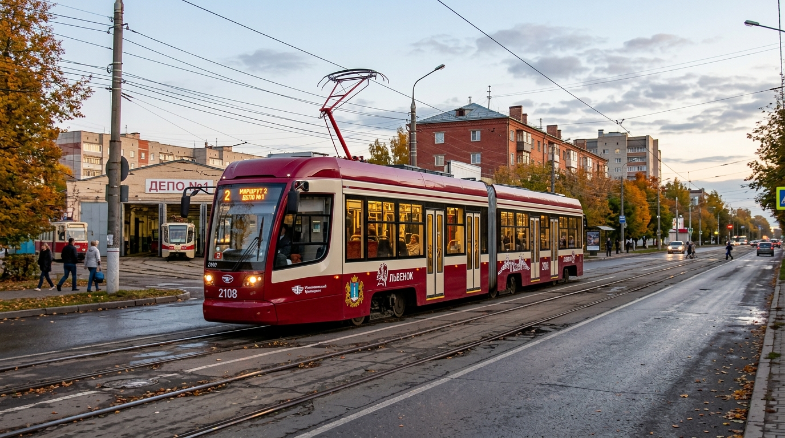
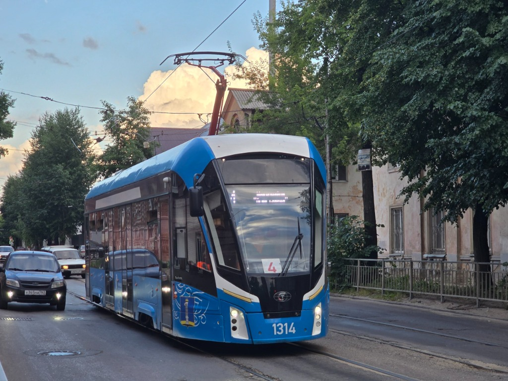

Омниканальный подбор и подготовка кадров электротранспорта
Сквозная 16-шаговая цифровая воронка найма, выплата стипендии от 25 000 ₽ в период обучения, зарплата до 95 000 ₽, омниканальные шлюзы Telegram, VK, MAX и защищённый веб-портал по 152-ФЗ.
Сквозной скоринг: возраст, ВУ, ст. 328.1 ТК РФ, медосмотр и депо
Ежемесячная стипендия курсантам учебного центра с гарантией работы
Шифрование ПДн, отзыв согласий ст. 21 и проверка судимостей на транспорте
Единое окно: Telegram, VK Мессенджер, корпоративный MAX и Веб-портал
Наш транспорт: 71-911ЕМ «Львёнок» в городе Ульяновске

Низкопольный трамвай «Львёнок»
Климат-контроль, плавный ход, 100% низкий пол и эргономичные места для пассажиров.

Работа на центральной линии города
Плавный пуск, электронная телеметрия и эргономичное рабочее место водителя.
Интерактивная 16-шаговая воронка UETBot
Нажмите на любой шаг, чтобы просмотреть логику проверок, валидаторы FSM, транзакции SQLite и события, поступающие специалистам отдела кадров.
Техническая архитектура UETBot v1.9.0
Кликните по любому узлу топологической схемы, чтобы изучить протоколы обмена, механизмы защиты от сбоев и спецификацию модулей.
Telegram WebApp & Bot
Интерфейс соискателя, инлайн-кнопки, анкета WebApp и статус
Aiogram 3 Core & FSM
Асинхронные роутеры, 16 шагов автомата состояний и фильтры ролей
SQLite WAL & Encryption
Контекстные менеджеры, журнал 152-ФЗ, шифрование и бэкапы
Шлюзы: VK Мессенджер & MAX
Двусторонняя трансляция сообщений с кандидатами из сообщества ВК и корпоративного контура MAX
Веб-портал соискателей & Кабинет HR
Подача анкет онлайн, мгновенная проверка статуса, дашборд кадровика, проверка прав по ролям
Aiogram 3 Core Engine & FSM
Центральное асинхронное ядро системы. Управляет 16-шаговым конечным автоматом состояний соискателя, изолирует роутеры кандидатов и кадровиков, синхронизирует статусы с депо.
Правовая защита, 152-ФЗ и требования ТК РФ
Архитектура спроектирована специально для муниципального перевозчика: локальное хранение данных на территории РФ, отсутствие сторонних аналитических трекеров, криптографическая защита и регламент отзыва согласий.
Шифрование персональных данных
AES-256Чувствительные поля соискателей (телефоны, серии водительских прав, даты рождения) шифруются на сервисном уровне перед сохранением в SQLite. В интерфейсах кандидатов телефоны маскируются (+792***8877).
- Хранение БД в защищённом контуре сервера предприятия
- Изоляция дескрипторов файлов с правами chmod 600
Ограничения ст. 328.1 ТК РФ
ФЗ № 155-ФЗАвтоматизированный комплаенс-контроль допуска к управлению городским пассажирским транспортом. Проверка наличия справок об отсутствии судимости по тяжким и особо тяжким статьям УК РФ.
- Скоринг водительского состава до направления в депо
- Пакет документов для отдела кадров со штампом проверки
Отзыв согласий (ст. 21 152-ФЗ)
Удаление ПДн
Кандидат может в 1 клик отозвать согласие через команду /revoke_pdn. Бот безвозвратно уничтожает анкетные данные соискателя с записью акта об уничтожении в журнал аудита.
- Формирование протокола уничтожения ПДн
- Автоматическая деперсонализация через 30 дней
Ролевой доступ сотрудников (RBAC)
3 уровняКадровики, инженеры депо и суперадминистраторы имеют строго разграниченные зоны ответственности. При снятии прав доступ в служебную панель (/dashboard) немедленно блокируется.
- Засвияжское, Северное и Заволжское депо
- Живая валидация сессий через /api/auth/verify_session
Шлюзы синхронизации коммуникаций
Кандидаты обращаются через популярные каналы — кадровая служба МУП «Ульяновскэлектротранс» обрабатывает заявки в едином защищённом пространстве.
Telegram Bot & WebApp
Основной канал взаимодействия. Поддерживает мгновенное заполнение анкеты через WebApp, проверку статуса, напоминания о собеседованиях и онлайн-чат с кадровиком.
Шлюз ВКонтакте
Интеграция с официальным сообществом МУП «Ульяновскэлектротранс» ВКонтакте. Вопросы и заявки соискателей мгновенно попадают в общую очередь рекрутеров.
Корпоративный шлюз MAX
Суверенный защищённый мессенджер-контур для служебной коммуникации кадровиков и начальников депо без передачи трафика на внешние сервера.
Roadmap и статус релизов
Развитие системы от базового диалогового бота до масштабного карьерного портала с поддержкой стипендиальных программ и омниканального рекрутинга.
Старт FSM-ядра
Базовый приём анкет водителей трамвая и троллейбуса в Telegram, локальная база данных SQLite.
Шлюзы и депо
Двусторонний мост с сообществом ВКонтакте, разделение вакансий по Засвияжскому, Северному и Заволжскому депо.
Релиз v1.9.0: Акты РКН №179 & Статус анкеты
Официальное скачивание актов уничтожения ПДн по 152-ФЗ, разделение статуса анкеты и личного кабинета, авторские фотографии парка вагонов «Львёнок» (маршруты 22 и 4).
Графики смен и 1С
Интеграция с диспетчерскими системами, автоматическое распределение смен водителей и кондукторов с учётом норм отдыха.